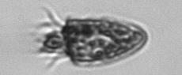
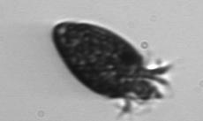

<div><h1>Strombidium_oculatum</h1></div>
-note “knob” -possible‘eyespot’ from sequestering plastids and swarming gametes from green alga Enteromorpha or chlorophyte prey<br>

<div style="display: inline-block">
IFCB1_2008_319_024932_03187<br>

</div>


<div style="display: inline-block">
IFCB1_2008_001_024805_01269<br>

</div>


<div style="display: inline-block">
IFCB1_2006_272_015709_01532<br>

</div>


